Reactio Draw is a free editor for chemical structures and reactions, with a reagent table for every reaction. It runs as one web page or as an app for Windows, Mac and Linux.
It is free and open source (Mozilla Public License 2.0), works fully offline — nothing is sent anywhere — and is light: the whole editor is one 4.1 MB web page (6.3 MB as a single offline file with the NMR tables), and the apps are about 20–28 MB to download.
This guide describes every button, key and function of Reactio Draw, each in a few lines. Chapter 6 is about the API, chapter 7 about the Reactio Draw tab in Word, chapter 8 about Reactio Draw in Excel.
The window has four parts: the document tabs at the top, the main toolbar under them, the left toolbar with the drawing tools, and the right panel with information and settings (tabs Analysis, Characters, Labels, Settings and Info).
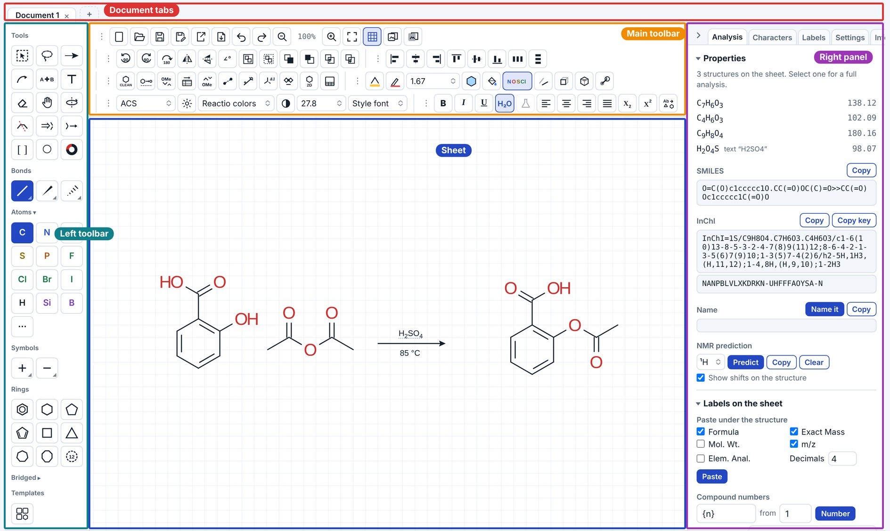
py -m pip install openclatura. Mac: python3.13 -m venv ~/.reactio-python && ~/.reactio-python/bin/pip install openclatura, then quit and reopen the app. Linux: python3 -m venv ~/.reactio-python && ~/.reactio-python/bin/pip install openclatura.Every open document has its own tab. The usual shortcuts work:
| Keys | Action |
|---|---|
| Ctrl+N | new document |
| Ctrl+O | open a file |
| Ctrl+S | save |
| Ctrl+Shift+S | save as |
| Ctrl+W | close the tab (the × next to the name does the same) |
| Ctrl+Shift+T | reopen a closed tab (the last 10) |
| Ctrl+Tab, Ctrl+Shift+Tab | next / previous tab (⌃Tab on a Mac too) |
| Alt+1 … Alt+8, Alt+9 | go to that tab; Alt+9 goes to the last one (⌥ on a Mac) |
On a Mac use ⌘ instead of Ctrl. In the browser version, be careful with Ctrl+W: the browser may close its own tab rather than the document inside Reactio Draw. The browser also keeps Ctrl+Tab (and, on some systems, Alt+1…9) for its own tabs; in the desktop apps they switch the documents.
When the tabs do not all fit, the mouse wheel over them scrolls the row.
A yellow dot next to a name means unsaved changes. Closing such a tab asks whether to save them. Unsaved work is kept in a temporary copy and only written to your file when you save. In the apps Save writes the new file whole and then puts it in place of the old one, so a save that fails (a full disk) leaves the old file as it was.
When the program starts, only documents left with unsaved changes come back (after a crash, a power cut, or a browser tab closed anyway). Documents that were saved are not reopened; with nothing left, the program starts with one new, empty document.
All buttons are grouped. A group can be moved, to another place or to the left toolbar, by dragging its grip ⋮; single buttons can be dragged between groups too. Settings → Reset button layout puts everything back. The layout is remembered and can be exported with your settings.
the grip of a group: drag it to move the group; on the top bar a click folds the group into one named menu, another click unfolds it.
With Settings → Interface → Top bar → Compact, the top bar keeps the file buttons and puts everything else into four menus in one row: Arrange, Structure, Style and Text.
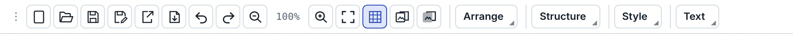
Messages (what was done, what could not be done, warnings) appear in a small box over the bottom of the sheet for a few seconds, or in the line of the stoichiometry grid under the editor when that grid is shown.
New document (Ctrl+N), Open (Ctrl+O), Save (Ctrl+S) and Save as (Ctrl+Shift+S).
An opened file is shown whole: the view fits the drawing to the window, as Fit to window does.
Save as asks for the format. Reactio Draw document (.reactio), CDXML and CDX keep everything: drawing, reagent table, roles and conditions; Molfile, SDF and SMILES keep the structures only, RXN the reaction. Pictures placed on the sheet go into CDXML and CDX as pictures other editors show (PNG, JPEG or GIF), and pictures in CDX and CDXML files (also TIFF) open in Reactio Draw. Molfiles and SD files open in both V2000 and V3000; with stereo groups on the sheet they are saved as V3000 (V2000 cannot hold the groups), and SMILES as CXSMILES. CML (Chemical Markup Language, .cml) keeps the structures and a reaction’s reactants and products, and opens too.
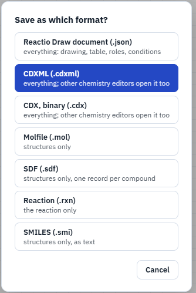
Crystal structures (CIF), test version. Open and drag-and-drop also take .cif files. Every data block goes on the sheet in its measured 3D geometry, drawn ball and stick, captioned with its name. The molecules of one block (a salt with its ions, a solvent) stay where they are in the crystal and are grouped: they move and turn together. X-ray data have no bond orders: they are worked out from the hydrogens in the file and the usual valences, with charges (N+, B−, PF6−) and the charge of a metal that balances its ions, so check them. Reading CIF is a test version, not fully checked yet; the message after opening says so.
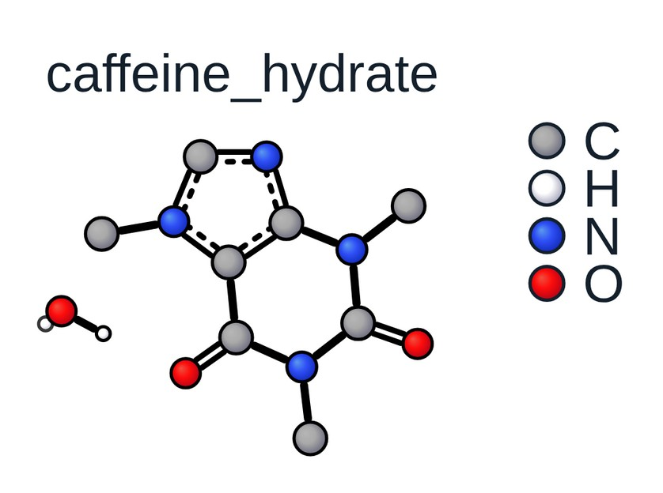
A crystal structure keeps its measured shape: moving, turning, 3D rotate, a flip and resizing move it as a whole, and an atom dragged goes back. Clean Up and Clean Up 2D work on a copy put beside it, so the flat formula with wedges comes from the crystal structure while the measured one stays. Atoms, ions and solvent can be deleted; the rest keep their places.
3D Molfiles and SD files keep their z coordinates: they open in their own 3D geometry, so 3D rotate and the 3D styles show the conformer of the file.
An XYZ file with several geometries (an optimisation, a scan, a trajectory, conformers) asks which to open: a slider, First, Last, Lowest energy (the energies of the comment lines are drawn as a small chart to click on) or Open all. The window shows the geometry picked in 3D, in the sheet’s ball and stick style (All H shows the H on carbon too): drag to rotate it, the wheel zooms, a double-click turns it back; it goes on the sheet rotated as shown.
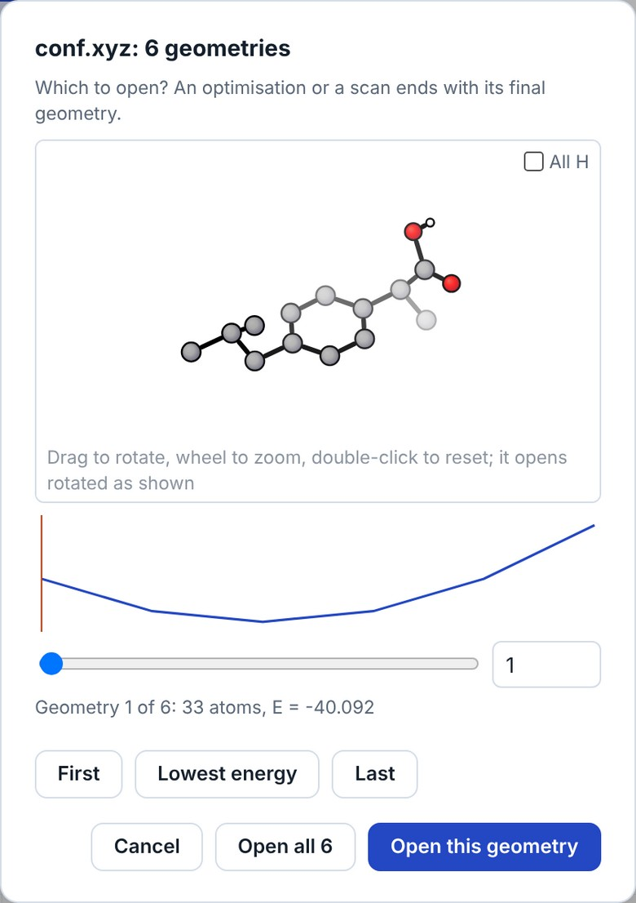
Export as…: Reactio Draw document (.reactio), CDXML, CDX, Molfile, SDF, RXN, CML, SMILES, Word document with an editable drawing (.docx), Open Reaction Database record (.json), SVG, PNG, EPS, PDF and TIFF, XYZ and a 3D SDF, and an animation.
Unlike Save as, Export makes a separate file and the document stays tied to its own file. For example, you work in reaction.cdxml and export a PNG for a paper: Ctrl+S still saves to reaction.cdxml.
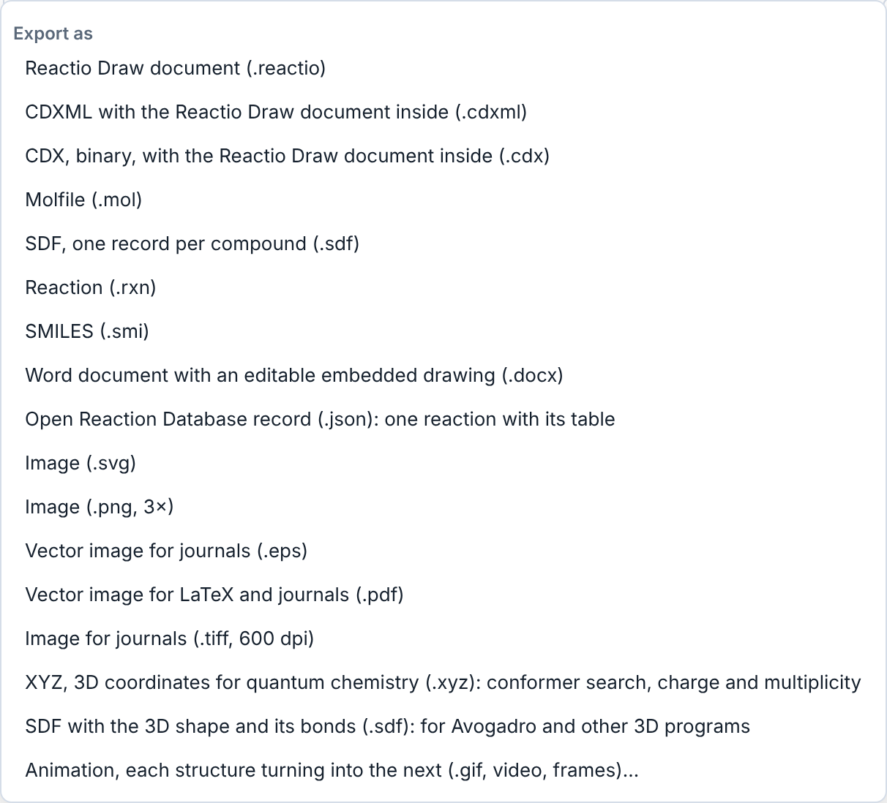
Pages (the button after Print): the sheets of paper or slides to draw on — A4, A5, A3, US Letter, Slide 4:3, Slide 16:9, a graphic for a table of contents at its published size (ACS 8.25 × 4.45 cm, RSC 8 × 4 cm) or a custom size in mm; portrait or landscape. Dashed outlines show where they fall, at the drawing’s true size, from the top left corner of the sheet on; with Margins ticked (top, bottom, left, right in mm) they are the part inside the margins, so each is smaller, and printing puts it inside them. The choice is kept with the document. For slides, the drawing style ACS for slides draws ACS twice as large (bond 28.8 pt, letters 20 pt). Print (the button at the end of the top row, Ctrl+P) asks for the paper first: fitted to one page, or on those sheets, a page for each one with something drawn on it, in one PDF when the print dialog saves one. Fitted, it prints the drawing alone, no wider than the page; the print dialog can also save it as a PDF. Where a page may not open a print dialog (shown inside another page), the drawing comes as a PDF to print. Scroll bars at the right and bottom of the sheet show where the view is when part of the drawing is out of it; drag them to move. The Print window shows each page to scale before printing, with its part of the drawing and the margins dashed.
Animation (File → Export as → Animation…): each structure of a scheme turns into the next — atoms move to their places, bonds that break or form fade, pieces that leave or join fly as pieces. Draw the structures left to right with reaction arrows between them (A → B → C; rows are read left to right, then top to bottom); several structures before an arrow move together, and reagents over or under an arrow stay out. With no arrows the structures are taken in reading order; with a selection, only the selected ones. The atoms are paired across each arrow by place, label and bonds (after cdxmorph, Ryan Shenvi, MIT); the more alike the two drawings are — the part that does not change in the same place and turn — the better the film.
Turning in 3D. Between two drawings of one molecule put ≡ instead of an arrow (three short parallel lines with no heads, or a text ≡: the ≡ button at the end of the Symbols tools puts one where you click). An example to open and try: examples/Animation - 3D turns and a reaction.cdxml in the repository (the example of cdxmorph, Ryan Shenvi): that step turns the molecule in space instead of reshaping it. The 3D shape is computed; to set it yourself, put the molecule with 3D coordinates (a structure from a crystal file, kept with its depths in CDXML) straight above its drawing: it is not in the film, it only tells how the drawing beneath it turns. Turn such a pose with 3D rotate to change the view: it keeps its own geometry (a new shape is computed only for a structure with no 3D places, or by 3D shape).
The window lists each step: how many atoms are paired, how many bonds kept, broken and formed, and “turned in 3D” for a turn. Width, Each step (s), Frames a second, Hold at the ends, Pause between steps and There and back (the film played backwards after it, for a looping GIF) set the film; Preview plays it; Save GIF, Save video (MP4 or WebM, where the browser can) and Save frames (PNG files in a zip) save it.
File menu: copy to the clipboard as CDXML, Molfile, RXN, SMILES, InChI and InChIKey, or as a picture for Word / PowerPoint; export and import of your workspace (hotkeys, button layout, labels and templates) as one .json file, to keep it or to give it to a colleague; open a file; insert a picture.
Copy for LaTeX (File → Copy to clipboard → Figure for LaTeX, the button after Pages; Edit → Copy for LaTeX in the Mac app): the drawing as a LaTeX figure whose compound numbers match the text. Next to a saved scheme.reactio it writes scheme.pdf, the drawing without its [[key]] compound marks, and scheme.tex, which places that PDF and sets each mark over it as \rcmpd{key}, numbered by chemnum in the order the compounds are first mentioned in the paper. The clipboard gets a figure that includes it (\input{figures/scheme}). With something selected, the figure is that part only, with only its marks; saving the drawing later makes it the whole drawing again. Pasted into Lattice, the figure brings its files and the preamble lines it needs; in another LaTeX editor, copy scheme.pdf and scheme.tex into the project’s figures folder and add the \rcmpd block from docs/latex-marks.md to the preamble. File names are made plain for LaTeX (Схема 1 → Skhema_1). A drawing larger than the page is scaled down to the line width, its numbers staying in place in the size of the text. Refer to a compound in the text with the same mark, \rcmpd{ketone}. A PDF or .tex of another drawing with the same name is never overwritten. It works with pdfLaTeX, LuaLaTeX and XeLaTeX and on Overleaf; docs/latex.md has the details. The numbers set over the PDF are in the drawing’s font (Helvetica for Arial and other sans-serif fonts, Times or Courier); a document can choose another for all figures by defining \reactiofigurefont in its preamble. Ordinary Copy (Ctrl+C) for Word and PowerPoint stays as it is.
Pasting and dropping. Ctrl+V pastes text, SMILES, molfiles, CDXML and pictures at the place of the pointer, screenshots too (Win+Shift+S, Print Screen). A picture can also be dropped onto the sheet or inserted from the File menu. A CDXML or CDX file dropped onto the sheet opens in a new tab; a Word file (.docx) opens with all its drawings on one sheet. What is pasted comes selected, ready to be moved, and the sheet keeps its place and scale (what lands out of sight is brought into view). A reaction SMILES pasted as text (A>>B) is drawn as the reaction.
Reactio Draw documents are saved as .reactio files: the whole document, with the reagent table, roles and conditions. The Windows, Mac and Linux apps open them on double-click. Files saved as .json by earlier versions still open.
The last part of the File menu works on a saved Word document (.docx):
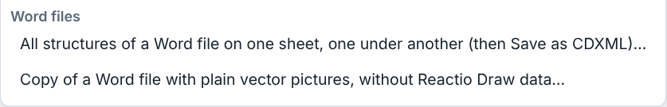
The Windows and Mac apps also add a Reactio Draw tab to Word, with these jobs and the editing of single drawings: see 7. Reactio Draw tab in Word.
Into Word and PowerPoint. Select the drawing (or nothing, for the whole sheet), press Ctrl+C and paste it into Word or PowerPoint with Ctrl+V.
Rotate by 90°, 180° or any angle, flip horizontally or vertically, group and ungroup (Ctrl+G), and the order of overlapping objects (to front, to back, forward, backward).
A group counts as one object everywhere: alignment and distribution use its own edges and centre (what is inside stays as it is), and the alignment guides snap to the group as a whole.
Align the selected objects (left, centre, right, top, middle, bottom) and distribute them evenly. Texts are measured in their own font, so a centred caption or compound number sits exactly under the middle of its structure. While you drag, smart guides show when edges or centres line up with other objects (Alt switches them off). Selected objects can also be moved with the arrow keys.
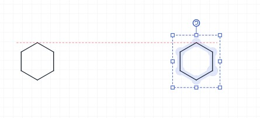
Clean Up Structure (Ctrl+Shift+K): redraws the selected structures with standard bond lengths and angles; a structure made larger or smaller with the selection handles keeps its size. Fused rings come out as they are usually drawn: regular hexagons on the grid, a five-membered ring between them slightly wide (acenaphthene with its naphthalene flat), symmetric when the system can be (fluorene, carbazole), with the substituents grown from the ring system. The configuration is kept: R/S at every centre with a wedge and E/Z at every double bond are checked after the new layout, and anything that turned over is put back; if that cannot be done, the structure stays as drawn and a message says so.
Clean Up takes wedges off ring bonds where it can: when a stereocentre can be shown on a group outside the ring, or on an H drawn for it, the wedge or hash goes there. The H stand outside the rings, a whole bond long, clear of each other (into the largest ring only for an atom shared by three); the molecule stays the same.
When a structure has little room, Clean Up helps itself in three ways. Three or four rings on one atom (BArF−, Ph4C, Ph3SiR) are set out as a cross, and a CF3 or tBu end turns a little out of the next group's way. Labels that cover each other are cleared by turning the whole structure slightly (at most 45°). Groups that still do not fit — their atoms land on others, their bonds cross, or their labels cover each other however the structure is turned — are written as labels: CF3, OMe, tBu, iPr, PCy2, CO2Et and the other groups of Contract Labels (not Ph), and every copy of that group in the structure goes the same way. When a ring has to be bent to make room, every group of the structure is written as its label: XPhos comes out with two regular rings, three iPr and Cy2P. Pressed again on the same structure, not changed since, Clean Up gives another layout (a branch turned over, the structure grown from another atom), each with the configuration kept; the message says which of how many it is. A structure with stereocentres or E/Z double bonds is left drawn out; a structure with room is not changed.
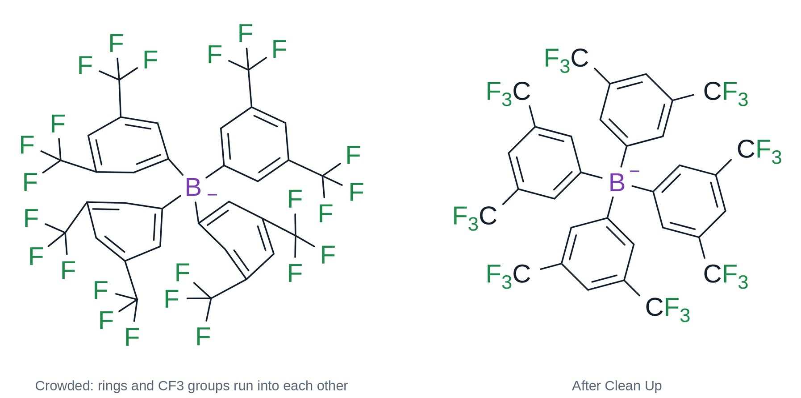
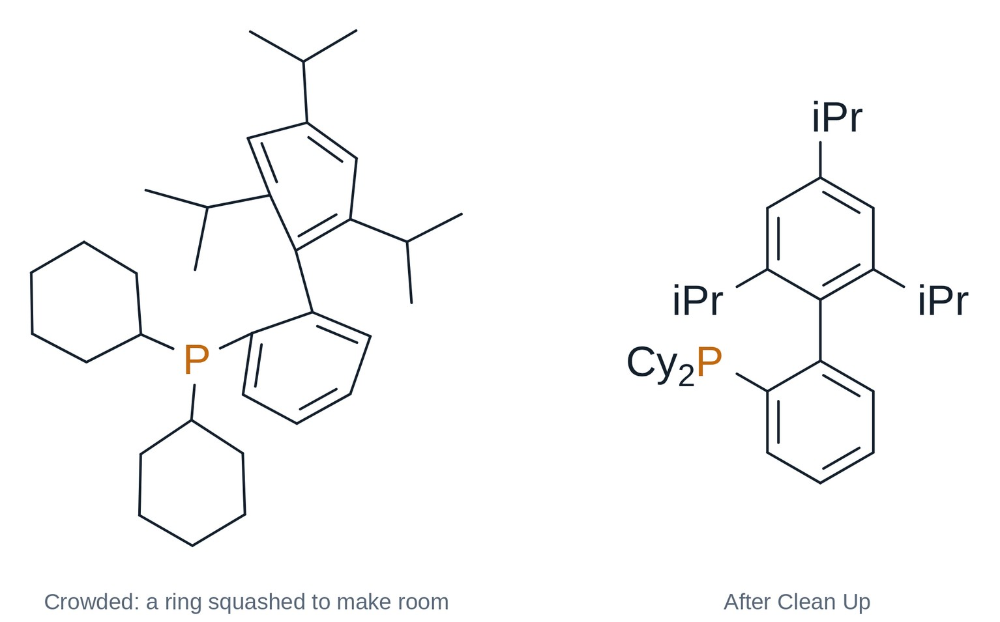
Clean Up is quick also on big structures (a peptide of a hundred residues takes seconds). For a structure of more than 40 atoms, which of its crossing bonds is in front is worked out after the layout, in the background: a bar shows it, the page can be used meanwhile, and Stop ends it.
Long chains (a peptide, PEG: 40 atoms or more in a row) are laid out in rows that turn back at the ends, like lines of text, each side group on the outer side. A carbon with two large branches (CMe2, CEt2) gets them up to either side and the small ones down; two rings with a donor next to it (the N of two oxazolines) turn so the donors face each other, as a ligand is drawn.
Known molecules — some 80 natural products and drugs (strychnine, paclitaxel, morphine, quinine, the steroids, penicillins…) — are drawn from the ChEBI drawing of the same molecule when they come from a name or SMILES, and Clean Up draws them that way again.
An H drawn on N, O or S goes into the label (NH, OH, SH, with no bond line); an H on carbon or on a wedge stays. A drawn methoxy (O–CH3) and a methyl drawn as a bond end can be written as labels too: Settings → Drawing (see chapter 4).
Clean Up Reaction (Ctrl+Shift+X): lines up the whole scheme — reactants, arrow, products and plus signs. Text written over the arrow (reagents) or under it (solvent, conditions) stays there, centred, and the arrow grows to fit it; reagents written as text left of the arrow line up with the reactants.
Clean Up 2D: lays the selected structures out flat. A structure turned in 3D (3D shape, 3D rotation) becomes a flat drawing again, its configuration kept as wedges and hashes. Bridged rings such as norbornane or camphor are drawn flat: a regular hexagon with the bridge inside it. Clean Up Structure keeps such systems in perspective.
Expand Label (abbreviation → atoms, e.g. OTBS drawn out) and Contract Labels (known groups drawn as atoms → their label).
Reagent table on the sheet: puts the table of the reaction on the sheet (click again to remove).
Which compounds go into the table depends on Settings → Reagent table → Covers. The whole sheet suits a document with one reaction: every compound drawn on the sheet goes into the table. The selected reaction (the setting a new installation starts with): select the scheme first, then make the table; structures drawn later do not join it, but text written over or under its arrow does. With nothing selected, a sheet with one reaction gets its table all the same.
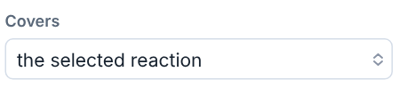
A new table is empty, apart from the density of known solvents: the amounts are yours to enter. The usual solvents (THF, DCM, MeCN, DMF, DMSO, toluene, EtOAc, Et2O, dioxane, hexane and the like, drawn or written) start as solvents, so their volume gives the concentration; every other compound starts as a reactant. Change a role by clicking its cell in the first row (AcOH or MeOH written under the arrow, for example, is a reactant until you choose Solvent) (Hide from grid takes a compound out of the table). A reaction copied together with its table pastes with a table of its own, with the same data.
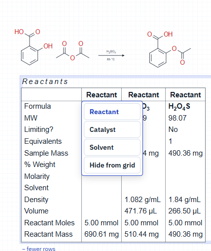
What you actually measured is shown in red. Before the reaction, mark the mass or the volume you will weigh or measure out: Alt+click that value. So it is clear that a liquid was taken by volume and not by mass.
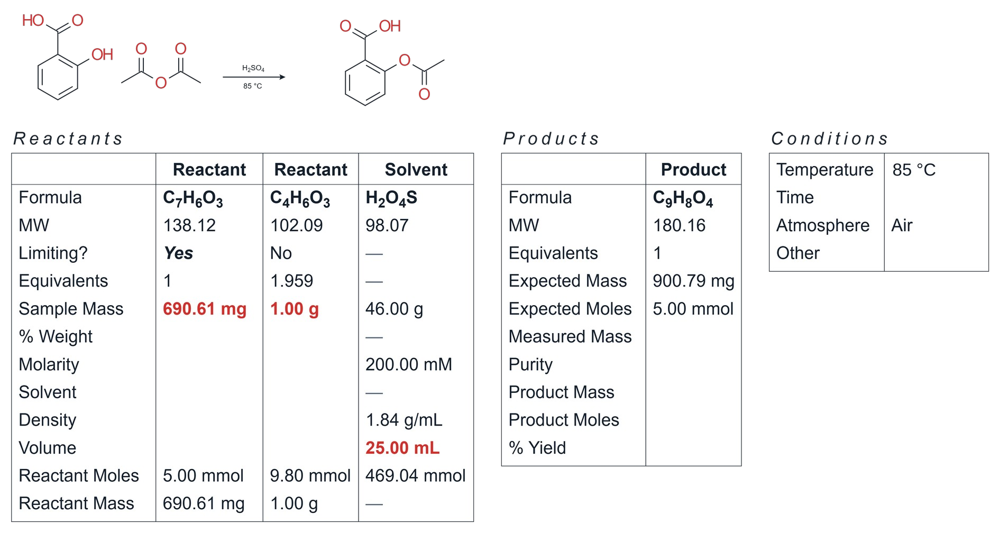
On the right are the conditions: temperature (rt, reflux, 0 °C, −78 °C or any value), time, atmosphere and other (light with its wavelength, microwave, ultrasound…; several can be chosen). Values can be typed as plain numbers, which take the unit already used in that row, or with a unit: 1 g, 1 mL, 10 min, 1 h.
Bond the two selected atoms and clean up the result (Ctrl+Shift+L).
Free bonds: bonds of any length and angle (otherwise they snap to the standard length and 15° steps). Holding Alt while drawing does the same once.
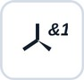
Stereo groups. The Stereo group button (Structure group, after Free bonds) marks the selected stereocentres: abs (Absolute configuration) — this enantiomer; &1 (Racemate) — both configurations together, e.g. a racemate, the wedges give the relative configuration; or1 (Relative configuration) — one of the two, not known which. Centres in one group change together (their configuration relative to each other is as drawn), so usually all the centres of a molecule go into one group; separate groups (&1, &2) are independent, e.g. a mixture of diastereomers. Draw the wedge first. The label stays beside the centre and travels with CDXML/CDX, MOL/SDF (V3000) and SMILES (CXSMILES, e.g. |&1:1|).Merge structures (Structure group, before Mirror label): atoms of two structures drawn on top of each other become one atom, and bonds lying on top of each other become one bond (the higher order kept); a labelled or hetero atom is kept over a plain carbon. With two structures selected and nothing overlapping, the second is moved so that their two closest atoms meet, and those merge. With nothing selected it works on the whole sheet.
Mirror label (the last button of the Structure group): the label of the selected atom is written the other way round, so that its attaching atom stands at the bond — OtBu ↔ ᵗBuO, OTBS ↔ TBSO, CO₂Me ↔ MeO₂C. The chemistry does not change, only the order of the letters and the side the label meets its bond. Labels are also kept off each other by themselves: a group label that would run into the one next to it is written the other way round (OMe as MeO beside a HO), or an H goes to another side clear of the bonds (HO as OH); where that is not enough, Clean Up turns the structure, in 15° steps, to where its labels overlap least. A direction set with Mirror label stays as set.
Enantiomers and diastereomers. With n stereocentres there are up to 2ⁿ stereoisomers. Mirror images are enantiomers; all the other pairs are diastereomers, which differ in physical properties and NMR. The groups say which of these stereoisomers are in the flask.
One group or several? Put centres into one group when you know how they stand to each other — they change together. Use separate groups for centres that vary independently. An enantiopure part stays abs. Examples:
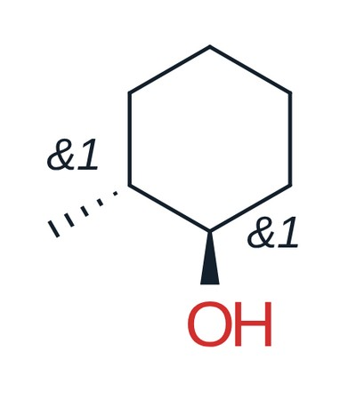
Racemate, one group. 2-Methylcyclohexanol has two stereocentres, so four stereoisomers: the trans pair (1R,2R)/(1S,2S) and the cis pair (1R,2S)/(1S,2R). The two members of a pair are enantiomers; trans and cis are diastereomers. Both centres &1: the trans pair only, this compound and its mirror image 1:1, no cis.
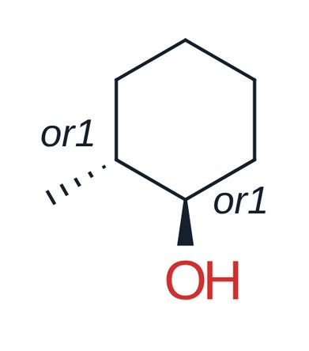
Relative configuration. Both centres or1: one of the two trans enantiomers, not known which (e.g. one peak from a chiral column); no cis, no mirror image.
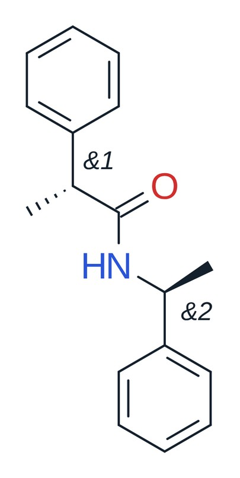
Two racemic parts, two groups. Amide of racemic 2-phenylpropanoic acid and racemic 1-phenylethylamine: &1 and &2, each centre independently R or S — all four stereoisomers, i.e. two diastereomers, each as a racemate. Both centres in &1 would claim only the drawn diastereomer and its mirror image.
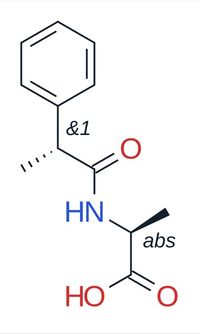
Enantiopure + racemic. L-Alanine (abs, S) acylated with racemic 2-phenylpropanoic acid (&1): (S,S) and (R,S), two diastereomers 1:1 — not mirror images of each other, so they usually differ in NMR and can often be separated by ordinary chromatography.
Newman, sawhorse and Fischer projections (the last three buttons of the Structure group): select a structure and press one. Newman: the structure seen along a bond (two selected atoms, or the bond pointed at; else its central one); the front carbon’s bonds meet in the middle, the back carbon is a circle its bonds start from. Sawhorse: the same bond seen from the side. Fischer: the open chain through the stereocentres upright, the most oxidised end (CHO, CO2H) at the top, at each centre its other two groups left and right, toward you. Each keeps the configuration (it is checked); the groups are written as text, as the drawing had them (Me and Et, or CH3, CH2CH3, CO2H, CHO, CH2OH…). The button again, or Back to the drawing in the right-click menu, brings the drawing back. One compound four ways:
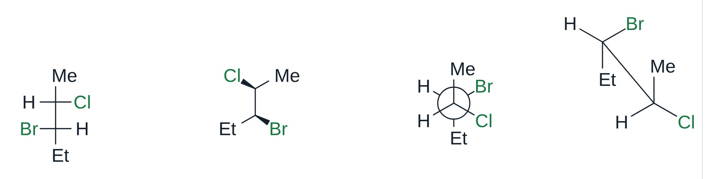
Right-click a projection to turn its back or its front carbon by 30° or 60° (staggered, eclipsed): only the groups of that carbon move, the other carbon and the bond between them stay, and the menu stays open for the next turn. From the same menu it becomes another projection, or the drawing again; a Fischer projection’s menu also adds H–C–OH to the chain below the carbon clicked (glyceraldehyde → erythrose → ribose).
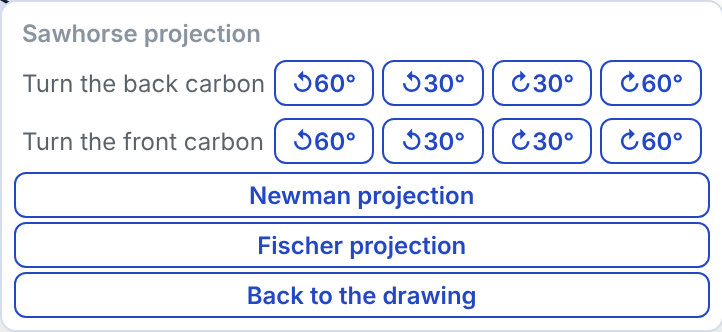
Blank projections: with nothing selected, the Newman, sawhorse or Fischer button puts an empty projection at each click on the sheet, until you take another tool (or press Esc); under the button, Staggered or Eclipsed. Its bonds are plain sticks to write the groups on (type on a stick’s end, as on any atom); a stick left bare is a methyl, as a line’s end always is. Right-click turns a blank with its groups into another projection or into a drawing with wedges, the configuration kept. One Ctrl+Z takes one blank away. Newman (staggered, eclipsed), sawhorse (staggered, eclipsed) and Fischer blanks:
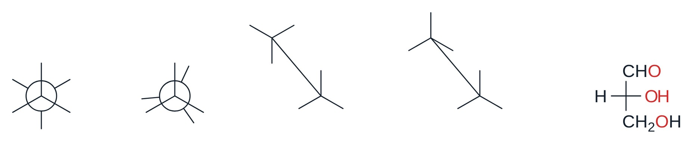
Haworth projection (the last button of the Structure group): select a sugar and press it. Its ring (five or six atoms, one of them O) lies flat, seen from a little above, wide and larger than the bonds around it, the front edge bold; the O is at the back on the right (a furanose’s at the back) and C1 on the right; each ring atom has its groups straight up and down, their bonds long enough to be seen past the labels. It is drawn as journals do, without H (left); right-click → Show H writes every ring carbon’s H and CH2OH as text, as books do (right), and Hide H takes them away. The configuration is kept, so β-D-glucose comes out with OH up at C1, down at C2, up at C3, down at C4 and CH2OH up. A ring of carbons only (inositol, menthol) is turned so that its groups stand at the sides and the back. Press it again, or Clean Up 2D, for the drawing back; right-click it for the other projections. With nothing selected, a click on the sheet puts a blank β-D-glucopyranose there, its groups to type over.
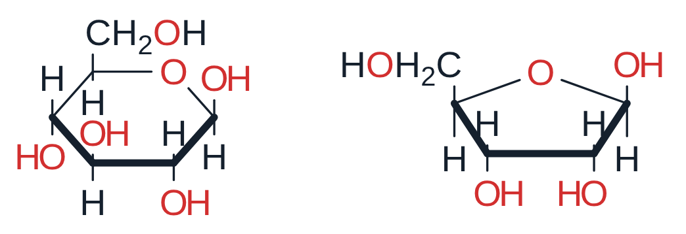
Rings from blanks: with the Newman button on, point next to a Newman projection already drawn and the ring that a click would make shows where it goes. A blank by a single circle makes cyclohexane in its chair (two circles joined by two CH2); by a circle at the end of a row, another ring fused there, trans to the side (the row goes on: trans-decalin, perhydroanthracene…) or cis above or below; by a circle with two rings already, a third one on its two bare bonds left. What is drawn stays where it is.
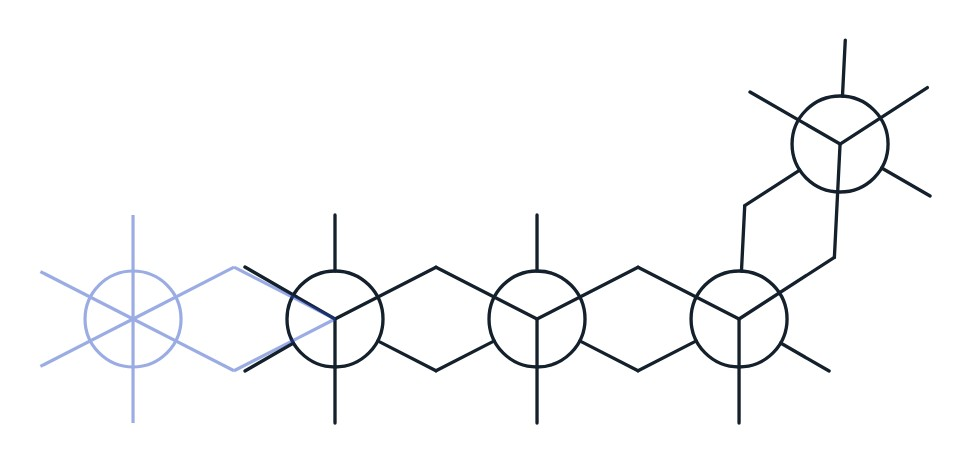
Reagent table under the editor: the same table as a grid below the sheet (scroll the page down to see it) — an alternative to the table on the sheet. Its Copy for Excel button copies the table, ready to paste into Excel.
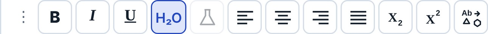
Bold, italic, underline, alignment of multi-line text, subscript and superscript.
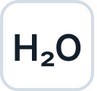
Formula style: digits in the text are written as subscripts (H2SO4 → H₂SO₄).Count text as a compound: the selected text (NaHCO3, THF…) gets a column in the reagent table.
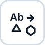
Count text as a structure: the text stays as written (MeMgBr, K2CO3, nBuLi), and the structure it stands for goes with it: its formula and mass in the reagent table, and the reagent in the reaction SMILES. Known names and formulas are counted without the button; the button is for the others, and a click again removes the structure. Shift+click draws the structure in place of the text; a salt (K2CO3) stays one compound, its ions kept together.Single characters. Double-click a text or an atom label to edit it. The editor shows the result itself, not codes. Select some characters and press Ctrl+B, Ctrl+I or Ctrl+U (⌘ on a Mac), Ctrl+= for subscript or Ctrl+Shift+= for superscript, or pick a font — only those characters change, e.g. the t of tBu in italic. Shift+Enter starts a new line, Enter finishes.
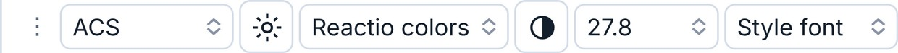
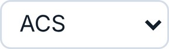
Drawing style of the selected structures, or of the document: ACS, RSC, Nature, Angewandte, Synthesis / Synlett and more.Edit the style: font, sizes and widths in pt or mm — make your own style. Settings → New documents makes it the style of every new document.
Colour palette of the document (Reactio colors, Publication, Presentation, Pastel, Jmol, Bright, Neon, Jewel, Color-blind safe and your own). Color-blind safe uses the eight colours of Okabe and Ito (vermillion, orange, yellow, bluish green, sky blue, blue, reddish purple, black), which people with any kind of colour blindness can tell apart; journals such as Nature recommend this palette for figures.
Paper colour: white, grey, dark grey, night blue, black or blueprint. In Settings the interface can follow the paper, so on a dark paper all panels turn dark too.
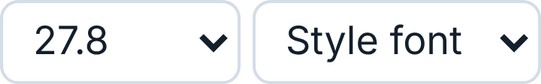
Size and font of the selected text or labels.Highlight atoms and bonds.
Colour of lines, labels, arrows and text.
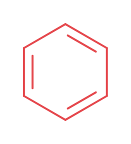
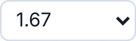
Line width of bonds and arrows (wedges and bold bonds follow).Ring fill colour.
Fill and outline of shapes (circles, rectangles…) and of mark balls: colour, transparency, solid / dashed / dotted / no outline.
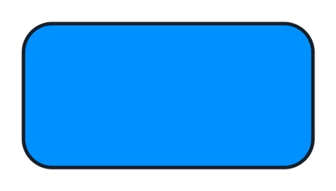
Heteroatom colours on or off (the whole document; atoms you coloured by hand keep their colour).
Fade by hand (for the selection) and automatic fade (the far side of a 3D structure fades as you turn it). Fade works on 3D structures only.
3D shape: builds a realistic 3D shape (OpenChemLib conformer, then the MMFF94s+ force field). You can also simply start turning a structure with the 3D rotate tool.
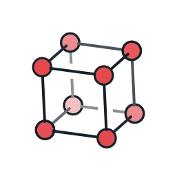
3D style: Lines (as drawn), Ball and stick, Tubes or Spheres for the selected structures (with nothing selected, for all of them). The same menu opens on a right-click on a structure. A flat structure gets its 3D shape first. The look follows xyzrender by Alister S. Goodfellow: shaded balls with a black outline, double bonds as two lines, an aromatic ring as one solid and one dashed line, η5 and η6 rings with a dot at the centre and a dashed bond to the metal, spheres that cut into each other. Hydrogens on N, O and S and at stereocentres are drawn; the far side fades with depth.
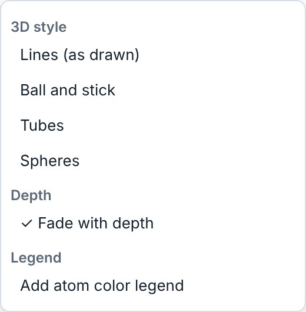
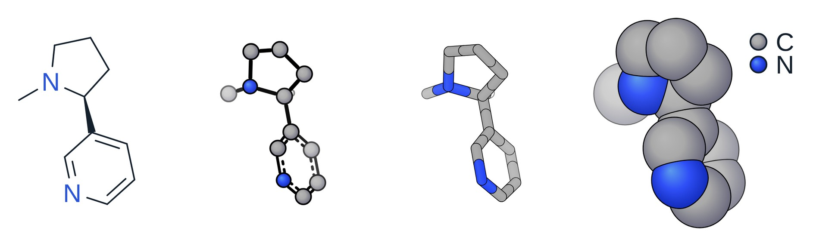
In the same menu: Fade with depth on or off for that structure, and Add atom color legend: a ball and the symbol of every element, beside the structure, as one group. The style stays when the structure is moved, turned, flipped or copied; editing the structure itself (an atom dragged, a bond added) returns it to lines.
Selection (Space) and Lasso. Switching to either selects the molecule you edited last (or, before any edit, the one under the pointer), with its group.
A click selects an atom or bond, a double-click the whole molecule, Shift+click adds to the selection (or takes out), a box or the lasso selects an area, Ctrl+A everything. Dragging an atom that is not selected moves just that atom.
A selection can be restyled with the main toolbar, dragged to move it, and turned, stretched or scaled with the handles around it. Ctrl+drag leaves the original in place and moves a copy; with Shift as well, the copy stays on the same horizontal or vertical line. Press Shift while dragging a selected group that hangs on the rest by one bond: it turns about the atom it hangs on and the bond keeps its length (Ctrl+Shift: 15° steps).
Resizing with the handles asks, when the selection has labels or texts, whether they take the new size: Change text size or Keep text size. For an energy diagram selected whole it shows two check boxes, Text size and Line width. Esc cancels the resize. Tick Always do this to stop the question; Settings → Drawing has both choices (Resizing with the handles: text size, Resizing an energy diagram: line width). A text resized on its own always takes the new size.
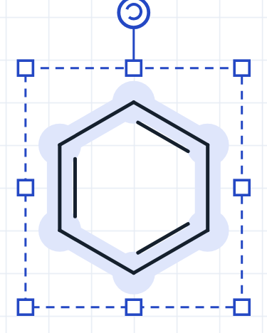
Arrows (E). Click the button again to choose the kind of arrow. A reaction arrow fits the texts over and under it, both ways: longer for a longer text, shorter for a shorter one. Right-click it for Length: fits its texts or as drawn (as drawn keeps the length you gave it, and the texts go with the arrow).
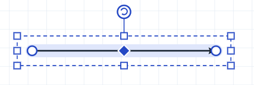
A selected arrow has handles to move, turn and scale it, plus three of its own: the circles at the ends move the start and the end, and the diamond in the middle bends the arrow. Drag the end of a straight arrow to make it longer; with Shift it turns in 15° steps; with Alt a straight arrow at any angle keeps its direction while you change its length. The end of a curved arrow slides along its own circle or oval (up to a full ring); with Alt it moves freely.
While you drag, the arrow itself is shown, faint: the same curve and heads as the one you get. A curved (mechanism) arrow starts and ends on an atom or on the middle of a bond: a ring marks the atom or bond it will take. Its ends stay a small gap off the atom or bond (Settings → Drawing → Ends of curved arrows: touching, or a larger gap); at an atom with a label it stops short of the letters.
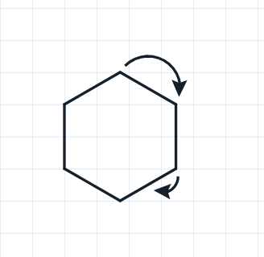
A curved arrow bent into a full circle can be selected and squeezed into an oval; its length then follows the oval. Ctrl+drag on an end makes a copy of the arrow in the same place — pull its end (without Ctrl) to build, for example, a catalytic cycle.
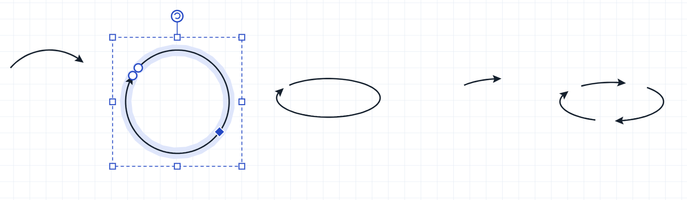
Straight arrows work the same way, for a chain of reactions.
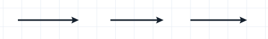
Catalytic cycle (in the arrow menu, clockwise or anticlockwise): drag out an oval arrow (Shift: a circle). A structure or text put on it cuts it into arcs, each with its head; the gaps go with the structures when they are moved. Right-click a structure or text next to the cycle: into the cycle draws an arc from it that merges into the cycle, out of the cycle an arc that peels off and points at it; several can join one arc. Remove takes the arc away, Detach leaves it as an ordinary arrow and frees the structure. The arc leaves the cycle in one round bend and ends aimed at the middle of its structure; a structure up to about four bonds from the cycle can join it.
Texts on an arrow. A text typed or dragged just above or below a straight reaction arrow sticks to it: the texts are centred over the arrow with the same gap above and below, the arrow grows as long as the widest text needs (what is to its right moves along), and they go with the arrow when it is moved. Drag a text well away to take it off. Right-click the arrow: Texts: stick to the arrow / free. Drawings opened from files or pasted stay as they were.
Wavy arrow (Wavy group of the arrow menu), for hν and emission, drawn with the wave of the Jablonski diagram; it goes to CDXML as a wavy arrow and comes back. The Long head group has a long narrow head in three sizes. A selected straight arrow has points on its head: drag the back corners (longer or shorter, wider or narrower), the middle of the notch (how deep) and the middle of a side (hollowed or straight); the shape goes to CDXML and comes back.
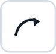
Pen: arrows of any shape. Each click places a point; drag while placing to bend the curve. The points and their handles can be moved later: click the arrow with the pen again.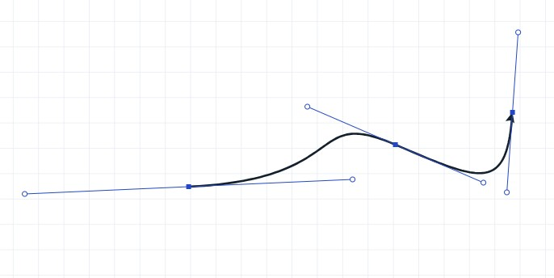
Right-click any arrow to change its kind (heads, equilibrium, retrosynthetic, dashed, no reaction…). Double-click an arrow to select the whole reaction with its reactants, products and conditions.
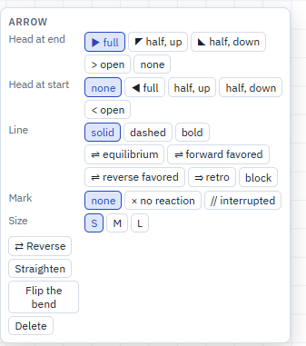
Reaction plus: a + between compounds of a scheme. It separates compounds and is not a charge.
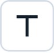
Text (T): click the sheet to write a caption. Text that is a formula (NaHCO3, Pd(PPh3)4) can become a compound of the reagent table; start or end a bond on it with the bond tool and it becomes a label that takes bonds like any substituent, still counted by its formula. Clicked next to the end of a chain, a group such as OEt goes onto that atom as its label. Select one text and drag a side of its box to make it narrower or wider, lower or higher: the lines flow again (a number keeps its unit); the corners scale the letters. Greek letters and signs by their LaTeX names: \delta, \nu, \Delta, \pm… become δ, ν, Δ, ± at the next space or sign (the space after the name is taken, so \nu h gives νh).Eraser: a click removes an object (an atom left with no bond goes with it, so no lone CH4 is left behind); dragging with the left button removes everything in the rectangle; dragging with the right button removes everything the pointer touches.
Hand: moves the view. The middle mouse button does the same with any tool. The mouse wheel scrolls the sheet up and down, Shift+wheel scrolls it sideways (on a touchpad: two fingers in any direction); Ctrl+wheel zooms.
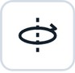
3D rotate: turns a structure in space. A flat structure is first given a 3D shape, which may take a few seconds for a large one; 3D structures turn at once. Right-click a structure in 3D for Show all H: every H is written as an atom where the 3D shape has it (on N, O and S too), in lines and in the 3D styles; Hide the H shown takes them away again.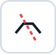
Break bonds into radicals: draw a line across the bonds.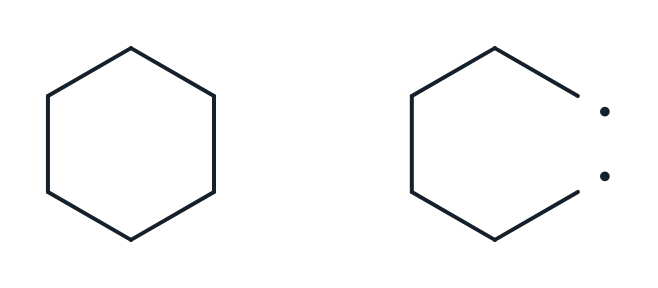
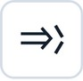
Retrosynthetic disconnection: draw a line across the bonds; the pieces become the precursors of a retrosynthetic arrow.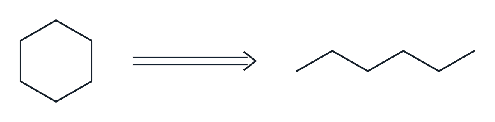
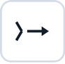
Reaction from a disconnection: the same, as a forward reaction.Brackets with their symbols (‡, n, charges…). The last one, ⌉, is the charge corner for the charge of a whole species: drag from where the top line starts: the corner comes out square, with equal sides; stretch it with Select if needed, and put the charge outside the corner.
Shapes and lines: circles, ellipses, rectangles, lines and arcs. Click the button again to choose the shape.
Charts: product-ratio pie or ring charts and sensitivity screens (the radar diagrams of Glorius and co-workers). Click the button again to choose; double-click a chart to edit it. Jablonski diagrams are there too: energy levels (singlets in one column, triplets in the other, sublevels above each) and absorption, fluorescence, phosphorescence, internal conversion and intersystem crossing between them. Double-click the diagram to edit it: change a level’s energy and its arrows follow. While its window is open, drag its parts on the sheet — a level up, down or sideways (an end stretches it), a name, an arrow sideways, an arrow’s label; the arrows stay on their levels, and Reset positions puts everything back.
Energy diagrams (Charts → Energy diagram, the last of the charts; click the sheet where it goes): a table of states and their energies, one row a state (R, TS1, INT1…), one column of energies a path. Type it in its window, paste it from Excel (into the first header cell: the whole table), or open an Excel (.xlsx), CSV or tab-separated file; Copy table gives it back for Excel. A column set to (in brackets) is written with the path before it (ΔH beside ΔG), a column set to (names) gives that path names of its own (TS1′, INT1′); an empty cell: the path does not go through that state. ↑↓ beside a row move a state with all its paths; Alt+↑/↓ in a path’s cell moves only that path’s value, so the paths can go through different states. ←→ in a column’s header swap it with its neighbour; + State and + Column add one. Look: levels joined by lines or dashed lines, or a smooth curve; the energies over and under the levels or beside them, the names, the axis and its title, the key. A value ending in ~ is reached through a break of the scale.
The diagram is made of ordinary lines and texts: move, recolour or delete any of them, and put structures beside the levels. A level dragged moves only sideways, as it stands at its energy (an end stretches it), and takes its joins and numbers along; the whole diagram selected moves freely, and resized with the handles it stays together and is drawn again at the new size (see Resizing with the handles above). Changing the table draws it again to scale, what was moved keeping its shift and what was deleted staying away; Reset positions puts them back. Double-click a level or a join for its window:
Tables: click on the sheet to put a table there, ruled as journals rule them, and type in its cells (Tab and Enter go on; the text buttons work on the picked cells). Right-click it for rows and columns (insert, move, delete), the first column numbered by itself, borders, fill, a structure in a cell and footnotes under the table.
Bonds: a click on the sheet places a bond, dragging pulls it out in 15° steps, a click on a bond with a bond tool makes it that type; a click on a bond that already is that type steps it on (single tool: single ↔ double; double tool: the second line of a double bond steps round, one side → centred → the other side, as the key 2 over it does; triple tool: triple → single). Three buttons with the same set of bond types (single, double, triple, wedges, hashed, bold, dashed, wavy, delocalized). There are three so that you can switch, for example, between wedge and hash with the mouse alone. Over a bond, keys change it: 1, 2, 3 set the order, and F puts the bond in front where bonds cross — the bond behind is cut there. A centred double bond meets the bonds beside it (a ketone’s C=O, C=CH2), with no gap under its lines.
More bond types in the same menus: quadruple (four lines), double with E/Z not known (crossed), and dative, an arrow from the donor to the acceptor that does not count in the valence (click it again to turn it round). Dative and quadruple bonds are drawn longer, so they read clearly. An allene gets a dot on its middle carbon, in a small break of the double bonds; right-click it to take it off or put it back. A bond dragged from a metal to the middle of a drawn ring (a Cp, a benzene) ends on the ring’s centre, an η bond: two such bonds from Fe to two Cp rings give ferrocene, C10H10Fe.
Atoms and the periodic table (…). Over an atom, a key sets the element (C, N, O, S, P, F; L for Cl, B for Br…). A double-click on a carbon repeats the last atom or label, however it was put on (typed, by a key or with an element button).
Valence check. After every change the valences are checked: an atom over its normal valence, or left short of it (O instead of OH), gets a red dashed ring unless a charge or a radical explains it. Carbenes, nitrenes, nitrenium ions and similar species pass. The rings show only on screen, never in copies or exports; Settings → Warnings → Mark valence errors on the structure turns them off. Hypervalent atoms follow the usual valence rules: P up to 5 bonds, S and Se up to 6, Cl, Br and I up to 7; a charged atom is checked like the element with the same number of electrons, so PF6−, AsF6−, BF4− and SiF6 2− pass, and neutral P with four bonds takes an H (HP(O)(OH)2, phosphorous acid). A bond can always be added, even past the valence: the atom is then marked.
Structure checks. Run together with the valence check and marked on the structure: red for errors (atoms on top of each other, an atom lying on a bond it does not belong to, a stray atom left inside another structure), orange for stereo warnings (a wedge or hash at an atom that is not a stereocentre, wedges and hashes that contradict each other), grey dashes for hints (an unusually short or long bond, a double bond drawn straight so E/Z cannot be read, two wedges of one kind at a centre with three bonds); orange also marks a wedge between two stereocentres, a wedge on a ring bond where a bond outside the ring could carry it, and a wedge on a double bond (not read as stereo). The stereo rules follow the IUPAC recommendations for drawing stereochemistry (2006, ST-1). A line under Properties counts them; click a count to select the atoms. Settings → Warnings → Mark stereocentres drawn without a wedge or hash adds one more hint (off by default). Like the valence rings, these marks never leave the program.
Atoms on top of each other (red): a second molecule dropped onto the first. | Atom on a bond it does not belong to (red): an O lying on a C–C bond. |
Stray atom inside another structure (red): a lone carbon left in a ring. | Valence error (red ring): a carbon with five bonds. |
Wedge not at a stereocentre (orange): the CH carrying two identical methyl groups is not a stereocentre. | Contradicting wedges (orange): a wedge and a hash at alanine’s centre that give opposite configurations (IUPAC ST-1.2.10: not acceptable). Draw one wedge or one hash. |
Two wedges on neighbouring bonds (orange): at a centre drawn with all four bonds, two wedges side by side give different configurations (IUPAC ST-1.1.11: ambiguous, never use). | The same centre, acceptable: wedges on the two opposite bonds (Br and Cl toward the viewer, the carbons away). No mark. IUPAC accepts this (ST-1.1.3) but prefers one wedge, or one wedge and one hash on neighbouring bonds. |
Two hashes at a centre with three bonds (grey hint): clear — both say the H points to the viewer — but IUPAC prefers one (ST-1.2.5). | Stereo group on an atom that is not a stereocentre (orange): &1 on a carbon with two methyl groups. |
Wedge between two stereocentres (orange): the wedge joins two stereocentres, so it is unclear which one it describes (IUPAC ST-0.5: avoid). | Wedge on a ring bond (orange): put it on the OH instead (IUPAC ST-0.2: not acceptable when a bond outside the ring could carry it). |
Wedge on a double bond (orange): a chiral sulfoxide is fine, but its wedge belongs on a single bond (S–CH₃ or S–Ph; IUPAC ST-1.5). A wedge on S=O is not read as stereo: SMILES, InChI and MOL keep the double bond without configuration. | Unusually long bond (grey hint): one bond much longer than the others. |
Double bond drawn straight (grey hint): E/Z of but-2-ene cannot be read. |
Symbols: two buttons with charges, radicals, lone pairs, attachment points, the mark ball and partial charges δ+ / δ− — two, so that + and − are both at hand.
Partial charges δ+ and δ−: click an atom, again to remove; drag the symbol to move it. Drawing only: formula and valence do not change.
Orbitals: s (empty or filled), dxy, a single lobe (filled or empty), dz² (the ring or the lobes filled), p, and sp³ (the big or the small lobe filled). Click an atom (or drag to set the direction, in 15° steps); click again for the orbital menu. All orbitals are drawn at one size (Alt+drag sets the size too). An orbital put on an atom stays on it when the atom moves. Selected, it has two handles: the round one turns it about its atom (the size stays; Shift for 15° steps), the square one makes it bigger or smaller (the direction stays). With the bond tool, drag from one orbital to another for the overlap line: a line starts and ends at the tip or the middle of a lobe (all four of a d orbital, both of an sp³), or at the centre of an s orbital or anywhere on its circle; the dashed bond tool gives a dashed line. Orbitals go to and come from CDX and CDXML files.
Mark ball: a light ball on an atom for highlighting (each click makes it bigger, then removes it). Its fill and outline are set with the fill button.
Rings of any size, also your own (for example 18). Click a bond to fuse the ring onto it, an atom to attach it (inside a chain or ring: a spiro ring), or empty sheet for a ring on its own. On a chair, a bond added to a carbon comes axial first (straight up from a high carbon, straight down from a low one), then equatorial.
Bridged ring systems (norbornane, adamantane, cubane…), and two chair cyclohexanes (after Cubane), drawn as chemists draw them. They dock as the other templates do: clicked on a bond they are fused onto it, on an atom they make a spiro junction (or are bonded to it), also onto a selected structure. Right-click the button (or one of your templates) to choose, on a big drawing, the bond it is fused by and the atom it is put on by.
After the two chairs come a cyclohexane boat and a twist-boat. A bond drawn from their carbons goes where they have it: on the boat from the raised ends the flagpole straight up, then the bowsprit out; from the front pair straight down, then out and up; from the back pair straight up, then a short one inside; on the twist-boat where its 3D shape has its H, the one nearer upright first. Placed from the template they carry their 3D shape: 3D shape and 3D rotate keep a boat a boat and a twist-boat a twist-boat, with what was drawn on them from there, instead of making chairs of them.
My templates: select a structure and press Add selection in this menu. Templates can be grouped in tabs (make a tab and drag templates onto it). In the Hotkeys tab of the menu, every template can get its own key. A template clicked on a bond is fused onto it, on an atom it is bonded to it; right-click a template to choose, on a big drawing, the bond it is fused by and the atom it is put on by (the choice is kept).
Import reads two kinds of files. A Reactio Draw templates file (.json, made with Export) brings its templates back as they were saved, in their own tabs. A .cdxml / .cdx file turns every structure in it into a template, scaled to the sheet’s bond length, on a new tab named after the file; a salt (cation and anion drawn together) stays one template.
Five tabs: Analysis, Characters, Labels, Settings, Info. The panel can be made wider or narrower by dragging its left edge. The arrow at the left of the tabs folds the panel to a thin strip at the right edge, so the sheet gets the room; the arrow on the strip opens it again.
In a narrow window (up to 1060 px wide) the sheet keeps its room: the left tools go into one column (two compact rows in a window up to 700 px), with Bonds, Symbols, Atoms and Rings as one button each — the tool used last, a second click opens the others — and the top bar is compact. The panel starts folded and opens as a window over the right of the sheet; the arrow folds it again. The left tools scroll when they do not fit the height.
With one structure on the sheet (or one selected) it shows the formula, molecular weight, exact mass, m/z [M+H]⁺, elemental analysis and the isotope pattern. SMILES, InChI and InChIKey, and under InChI its CAS number, are made when you ask for them (see below). The drug-likeness numbers — cLogP, TPSA, H-bond donors and acceptors, rotatable bonds, the rule of five and pKa — are worked out only for a selected structure of up to 1000 atoms; otherwise the panel says “select a structure”, or “too large” with the number of atoms.
HRMS. Type the m/z found in the mass spectrum: the program suggests the ion (for example [M+H]⁺, [M+Na]⁺) and gives the error in ppm; above 10 ppm the line turns red.
With several structures the tab lists them. Select one, or click its formula in the list, to see its data.
SMILES, InChI and InChIKey. SMILES is canonical: the same structure gives the same SMILES however it was drawn, with the drawn stereochemistry. InChI and InChIKey come from the official InChI library (InChI Trust / IUPAC), built into the program: they work offline and in the browser. They are made only when asked for, not after every change, so large drawings stay fast: each box has a button Show for the selection (Show for the whole sheet when nothing is selected). Copy and Copy key put them on the clipboard, also without Show: they make the value and show it as well. A shown value stays until the drawing or the selection changes; then the button comes back. A structure too large to do here gets a message instead of a value: InChI goes up to 1023 atoms (“Too many atoms for InChI”), a SMILES with stereo (wedges, double bonds or a 3D shape) up to 1000 atoms and any SMILES up to 20 000 (“Too large to show here”, with the number of atoms: use File → Export).
CAS number. It comes from the dictionary of names, found by the InChIKey (in the web version a button first offers to load the dictionary). The CAS box has its own Show for the selection (or for the whole sheet), which makes the InChI first. For a compound not in it, select it (one molecule, or a salt) and press Search PubChem: PubChem is asked for its CAS number, only its InChIKey is sent and only when the button is pressed, and numbers whose check digit is wrong are left out. One number is shown, the dictionary’s when it has one, else the first that PubChem gives; the others PubChem lists are named in the note under it, as they are often an older number or that of a form or mixture. Copy puts the number on the clipboard.
pKa (estimate): each ionizable group with its pKa (acids) or pKaH and pKb (bases). The groups are found with the table of Dimorphite-DL (Apache-2.0); the value comes from textbook relations — Hammett σ of the ring’s substituents for benzoic acids, phenols, anilines and pyridines, Taft σ* of nearby groups for aliphatic acids and amines, the kind of ring for aromatic N (acetic acid 4.76, p-nitrophenol 7.16, pyridine 5.25, diethylamine 11.0). Against 6800 measured aqueous values half are within 0.7 units and four in five within 2: a guide, not a measurement.
Show R/S and E/Z on the structures writes the descriptors next to the stereocentres and double bonds, and (M) or (P) for an allene drawn with a wedge at one end and for a hindered biaryl (BINOL, BINAP…) drawn with a wedge at its axis (IUPAC 2013, P-93.5.1.3). Drag a label with the selection tool to put it elsewhere: it keeps that place by its atom or bond and goes with the structure. Right-click a label for its colour (or the same colour for all the labels) and to put it, or all of them, back in their own places. Their right-click menu also makes them larger or smaller (A− A+).
Name it (Mac, Windows and Linux apps) makes the IUPAC name with openclatura and checks it by reading it back with OPSIN; a name marked ✓ was read back as the same structure. openclatura names organic structures only: inorganic species (PF₆⁻, BF₄⁻, ClO₄⁻, SO₄²⁻, metal ions and complexes, water) get no name. A salt is named part by part — the organic ion gets its name, the inorganic one shows as “?” (for example “1-methylpyridin-1-ium; ?”) — so a full salt name such as “1-methylpyridinium hexafluorophosphate” has to be written by hand. Trust only names marked ✓.
Alternative name, beside it, names the structure with the namer of Octet Draw (Sam Ellis, Apache-2.0), in the page, the browser included; each name is read back with OPSIN and compared with the drawing (✓ when it matches). It also names coordination compounds by additive nomenclature — chloridotris(triphenylphosphane)rhodium(I), tris(ethane-1,2-diamine-κ2N,N′)cobalt(3+) — with κ, μ, η, cis/trans, fac/mer and Δ/Λ where the drawing fixes them, and gives such a name only when every part of it checks out: each ligand read back by OPSIN, the donor atoms, the metal and the charge. Numbering, at the end of the row, writes the IUPAC numbers (locants) beside the atoms as the name counts them — 1 to 8a on a naphthalene, the parent chain or ring of a substituted structure; press it again to take them off. Change the structure (an atom, a bond, a label) and it is numbered again. By hand numbers atoms in the order you click them (1, 2, 3…; a numbered atom clicked again loses its number); Molfiles, SDF and XYZ files list the atoms in that order. Atom numbers stand clear of the bonds and labels by themselves; drag one where you want it, and right-click it for its colour, size (A− A+), bold, back to its place, or the same look for all the numbers. Numbering again after a change keeps their look.
NMR prediction: ¹H, ¹³C, ¹⁹F and ³¹P shifts from measured spectra (nmrshiftdb2). The shifts appear as a stick spectrum and a table, and can be shown next to the atoms; pointing at an atom lights its row in the table (and a row lights its atoms); Clear takes them off. An environment the tables do not have as drawn — a rare alkyl group such as the N-methyl of N-methylpyrrole, or the para carbon of phenol, aniline, benzaldehyde or pyridine — is predicted from its nearest analogues. In the web version the tables (2.2 MB) are downloaded on the first Predict, after asking. Copy gives a line for the supporting information, ending with a sentence naming the data source (nmrshiftdb2 and its licence). It is a prediction, not a measured spectrum.
¹H signals come with their multiplicity and coupling constants, as in “3.65 (dq, J = 7.0, 1.5 Hz, 1H)”: in open chains from the electronegativity of the substituents, for alkenes cis or trans from the drawing, aromatic ortho and meta couplings, and in rigid rings from the 3D shape by the Karplus equation (dihedral angles). Busy groups are given as m. They are estimates: the coupling constants are usually within 1–2 Hz.
The spectrum is drawn with Lorentzian lines and first-order multiplets at the frequency chosen (60–800 MHz; ¹³C, ¹⁹F and ³¹P at their own frequencies), with the residual solvent and water peaks of the solvent chosen, a line width in Hz, and colours for the signals (filled peaks, and the same colours at the atoms); the mouse wheel zooms, dragging pans, and the bigger view opens it in a window. Spectrum and Details put the spectrum and the table of signals under the structure as pictures, and Data under structure writes the shifts there as text, as an experimental section gives them — each structure its own.
A counter-ion written as text (PF6−, BF4−) counts in the formula and masses when it is selected with the structure, or always when it stands beside the only structure on the sheet.
Labels on the sheet. Select a structure, tick the data you want (formula, MW, exact mass, m/z, elemental analysis) and press Paste: the lines go under the structure and update themselves.
Compound numbers. Select the structures and give a template: {n} gives 1, 2, 3…, {a} gives a, b, c… (4.{n} → 4.1, 4.2; S{n} → S1, S2; 3{a} → 3a, 3b), and the first number. The number is bold; the second box (then, not bold) adds text after it in plain type — 5.{n} with (xx%) gives 5.1 (xx%), and you only have to replace xx with the yield. Numbering again replaces the numbers. The numbers then keep themselves in order: number a new compound between two others and the later numbers move on; delete a structure and its number goes. Each series (a template with its first number: {n} from 1, 3.{n} from 1) is counted on its own, and a copied structure takes its number along. Type a letter after a number (2a, 2b) and those compounds share one number. \n in either box starts a new line; Paste under the structure (above) on a numbered compound writes its lines under the number, in the same text.
Marks for Word. The template can write marks instead of numbers: [[amine.{n}.letter]] with , xx% puts [[amine.1.letter]], xx%, [[amine.2.letter]], xx%… under the selected structures, in reading order, and Number compounds in Word turns them into 3a, 3b… (see Compound numbers in a Word file). Long marks that run into each other show on the sheet as grey numbers; point at one to see its mark.
Add a structure from a SMILES or a name. Names are read everywhere, the browser included: systematic (IUPAC) names by OPSIN compiled to JavaScript, about 800 abbreviations, reagents and drugs from the tables of Octet Draw, a dictionary of 28,880 compounds from Wikidata with their common and trade names, CAS numbers (58-08-2) and InChIKeys, and condensed formulas (CH3CH2OH, PhCH2OH, Me3SiCl, (CH3)3COH; a molecular formula such as C2H6O is not read, as it has more than one structure). In the web version the name reader (3 MB) is downloaded on the first name it is needed for, after asking. A condensed formula written as a text on the sheet becomes a structure the same way.
Peptide sequence (Add a structure): one-letter codes (YGGFL; lower case for D: cyclo(RGDfK)) or three-letter codes (Ac-Ala-D-Phe-Gly-NH2; also Aib, Sar, Nle, Orn, Abu, Nva, Phg, Cha, Hyp), caps (Ac, Boc, Fmoc, Cbz, Bz), C-terminal ends (OH, NH2, NHMe, OMe, OEt, OtBu, OBn) and Cys–Cys bridges (CYIQNCPLG-NH2 S-S 1-6). The backbone is drawn as a straight zigzag with the side chains up and down in turn, bent at each Pro to give its ring room.
Repeat units. A SMILES with a piece repeated ten times or more (poly-L-alanine, PEG, polystyrene) asks first: one repeat unit in brackets with its n, or the whole chain. Formula, mass, SMILES and InChI are those of the whole chain; n stands at the right bracket and can be typed over. Molfile, SDF, RXN, CDXML and CDX keep the unit as a polymer group. A whole chain of more than 600 atoms is drawn in steps under a bar with Stop.
Symbols for text: °, ±, →, ⇌, Δ, Greek letters, sub- and superscript digits, hν, Å and more. A click inserts the symbol into the text being edited, otherwise copies it. Add your own in the box under the table; they stay, with a dashed frame; right-click one to remove it.
Labels are read by an algorithm, not looked up in a list: CO2Me, SO2Me, CONH2, Si(iPr)3, SnBu3, (CH2)3OH, P(O)(OEt)2, N(Me)Boc and the like are understood as they are typed, and formula, mass and SMILES count them. Group names (Me, tBu, Ph, Boc, Ts, TBS…) are the only list; it includes the abbreviations of the Beilstein Chemical Lookup Collection (OTES, DMTr, 2-py and about 200 more). A label written as a formula with no single structure (C10H7) is counted by its formula, and so is a label with a metal, however many bonds its atom has (Co(CO)3 in the cobalt complex of an alkyne). A label that cannot be read stays red. When the bond comes from the right, a label is written backwards: OEt → EtO, Si(iPr)3 → (iPr)3Si.
Your own abbreviations. Draw the group and put an attachment point (Symbols) on the atom where it attaches. Select the group, type the label (for example PMB) and press Save selection. From now on PMB is understood in structures, and Expand Label draws it out. A label has one attachment point.
The settings are split into small tabs at the top of the Settings tab, one group shown at a time (the last one opened comes back): Interface, Drawing, Warnings, New documents, Toolbar, Settings file, Reagent table and Hotkeys.
Interface
Zoom speed: how fast Ctrl+wheel and a pinch on the trackpad zoom the sheet (6× by default).
Theme of the panels and buttons (light at first): as the system (light or dark like your computer), light, dark, or matching the paper (dark panels on a dark paper, light on a light one). The sheet keeps its own paper colour in every theme.
Accent colour of buttons, selection and highlights: Blue, Teal, Green, Violet, Crimson, Amber, Graphite, or your own colour. The drawing keeps its own colours; a colour too light or too dark to read is adjusted for each theme.
Esc keeps the typed text: on, Esc finishes a text or an atom label like Enter; off, Esc throws the typing away.
Top bar: Full shows every group of buttons (a click on a group’s grip ⋮ folds that group into one menu); Compact keeps the file buttons and puts the rest into four menus in one row.
Drawing
NMe, NBoc, SiMe2 typed on an atom in a chain or ring: one label (the group beside the atom) or the group on a bond of its own. Typing it with a dash (N-Me) always gives the bond.
t, i, s, n in groups (tBu, iPr, sBu, nBu): plain, italic, or italic superscript. New labels follow the choice; Apply to selection changes the selected structures (or the whole sheet).
Ends of curved arrows: the ends of a curved arrow stay a small gap off the atom or bond (at first), a larger gap, or touch it. An atom with a label always keeps the arrow clear of its letters.
Clean Up: a methoxy drawn as O–CH3: leave it as drawn (a line, the default), or write it as the label OMe or OCH3 (H3CO on the left). A crowded methoxy that Clean Up has to write as a label follows this choice (OCH3 when it is Leave as drawn).
Clean Up: a methyl drawn as a line end: leave it as drawn (the default), or write it as Me or CH3 — the methyl of toluene, the CH3 of an ethyl; ethane is left alone. Both choices go into the settings file.
Resizing with the handles: text size and Resizing an energy diagram: line width: ask each time (the default), change it with the size, or keep it. Always do this in the question sets them too, and both go into the settings file.
Warnings
Mark valence errors on the structure (on by default): an atom over or short of its normal valence gets a red dashed ring. Turned off, the rings leave the sheet, but the Analysis tab and the API still report the errors. The rings never appear in copies or exports.
Mark stereocentres drawn without a wedge or hash (off by default, since racemic and unspecified centres are often drawn that way on purpose). The other structure checks show only on screen and are listed in the Analysis tab (see Structure checks in chapter 3). Warnings on the sheet has a box for each kind of warning, also for the dashed frame of a label that is not understood and for a charge that belongs to no atom: untick a kind to stop marking it.
New documents
Set the open document the way you like it (drawing style, heteroatom colours, palette, paper, font, grid) and press Use this document’s style: every new document starts that way. Apply to this document gives the open one that look; Reset lets new documents take the look of the one that is open.
Toolbar layout
Drag a button to move it, or a group by its grip ⋮ (on the left, by its heading). Reset button layout puts every button back where it was.
Settings file
Export hotkeys and settings saves hotkeys, button layout, accent colour, your labels, palettes, symbols and templates in one file, to keep or to move to another computer or colleague; Import… reads it back.
Reagent table
Covers: the whole sheet (every compound on the sheet, for a document with one reaction) or the selected reaction (select the scheme, then make the table; structures drawn later are not added). See Reagent table in chapter 2.
Hotkeys
Every command, tool and template can have its own key: we do not know which keys you like, so everything can be set. Search by name, or press ⌨ and then the keys to find what they do. Click a key, then press the new one; Esc cancels, Backspace removes the key. Reset hotkeys brings back the original keys.
Some come with a key: Clean Up 2D Ctrl+Shift+F; rotate 90° right Ctrl+Shift+. (period), left Ctrl+Shift+, (comma), 180° Ctrl+Shift+; ; Copy for LaTeX Ctrl+Shift+E; bold, italic and underline of the selected text Ctrl+B, Ctrl+I, Ctrl+U (Cmd instead of Ctrl on a Mac). While you type a text they change nothing in it.
Keys follow (Settings → Hotkeys): on a keyboard other than the US one (French AZERTY, German QWERTZ…) a hotkey is the key with that letter printed on it, so Ctrl+Z is the key marked Z; choose “their place on a US keyboard” to have the keys where a US keyboard has them. Digits keep their place, and keyboards whose letters are not Latin (Russian, Greek…) always use the place.
A key used twice is caught: a red dot on the Settings tab, a box at the top of the hotkeys list with each pair in red, and a warning. Only the same key in the same place counts — both among the commands, or both while pointing at an atom; a command key and an atom key may be the same.
At the end of the tab are two lists that cannot be changed: the fixed keys (Esc, Delete, the arrow keys that walk the hotspot or nudge the selection, Alt+← → to turn it by 15°, Ctrl+C / Ctrl+V…) and what the mouse does (a ring or template on a bond fuses it, Ctrl+drag copies, Shift+drag moves along one axis, the round handle rotates…).
The coordinates and angles of the selection, the switches of the API (chapter 6) and the folders that AI assistants may use, the version of Reactio Draw with a link to what is new in it, and Check for updates: it asks GitHub for the newest release only when you press it (the program never looks by itself). In the apps for Windows, Mac and Linux, when a newer version is out, it asks whether to download and install it; on Update it downloads it, checks it against the SHA-256 GitHub gives for it, puts it in place and starts again (unsaved documents are asked about first; the Mac app builds the new version, which takes about a minute and needs Apple's Command Line Tools). Then the credits: the components the program uses and their licences.
Reactio Draw can be driven by commands: draw a structure from a SMILES or a name, read the structures back with their formula, masses, SMILES, InChI and NMR shifts, fill the reagent table, export the drawing. The same commands work in three ways:
| Way | Who uses it | Where |
|---|---|---|
| Local API | scripts on your computer (Python, R, curl, an ELN tool) | Mac, Windows and Linux apps, with the AI assistants add-on; HTTP on 127.0.0.1 |
| Page API | code running in the page itself (the browser console, a userscript) | every version: ReactioAPI.run(op, args) |
| Embedding | a web site that shows the editor in an iframe | web version with ?embed; postMessage |
| Command line | you or a script in a terminal, for files: pictures, conversion, checks | Mac, Windows and Linux apps: reactio; no window opens |
Every command has a name (op) and arguments (args, an object). The answer is a result object, or an error with a message. SMILES in answers are canonical and carry the drawn stereochemistry (@/@@ from wedges and hashes, / and \ for E/Z).
%APPDATA%\ReactioDraw\api.json~/Library/Application Support/ReactioDraw/api.json~/.config/ReactioDraw/api.json{"url": "http://127.0.0.1:47615/api", "token": "…", "port": 47615}; the token changes at every start.POST <url> with the header X-Reactio-Token: <token> and a JSON body {"op": "…", "args": {…}}. Answer: {"ok": true, "result": …} or {"ok": false, "error": "…"}.import json, os, pathlib, urllib.request
p = pathlib.Path(os.environ["APPDATA"]) / "ReactioDraw" / "api.json" # Windows
# p = pathlib.Path.home() / "Library/Application Support/ReactioDraw/api.json" # Mac
# p = pathlib.Path.home() / ".config/ReactioDraw/api.json" # Linux
info = json.loads(p.read_text())
def rd(op, **args):
req = urllib.request.Request(info["url"], json.dumps({"op": op, "args": args}).encode(),
{"X-Reactio-Token": info["token"], "Content-Type": "application/json"})
answer = json.load(urllib.request.urlopen(req))
if not answer["ok"]:
raise RuntimeError(answer["error"])
return answer["result"]
print(rd("calc", smiles="CC(=O)Oc1ccccc1C(=O)O")) # aspirin: C9H8O4, 180.159 …
rd("addName", name="(2S)-2-aminopropanoic acid") # draws L-alanine
print(rd("inchi", index=0)) # InChI and InChIKey
print(rd("nmr", nucleus="13C", index=0)) # predicted 13C shifts
open("drawing.cdxml", "w").write(rd("export", format="cdxml")["cdxml"])
curl -s -X POST http://127.0.0.1:47615/api \
-H "X-Reactio-Token: <token from api.json>" -H "Content-Type: application/json" \
-d '{"op": "addSmiles", "args": {"smiles": "c1ccccc1O"}}'
library(httr); library(jsonlite)
info <- fromJSON(file.path(Sys.getenv("APPDATA"), "ReactioDraw", "api.json"))
rd <- function(op, args = list()) {
r <- POST(info$url, add_headers("X-Reactio-Token" = info$token),
body = list(op = op, args = args), encode = "json")
content(r)$result
}
rd("list")
In every version — the apps, the downloaded page and the web site — the page has window.ReactioAPI. Open the browser’s developer console (F12) on the Reactio Draw page, or run code in the page, and call:
await ReactioAPI.run("addSmiles", {smiles: "CCO"})
await ReactioAPI.run("list")
ReactioAPI.ops() // the names of all commands
Commands that take time (names, NMR, InChI) return a Promise, so use await.
In the apps for Windows, Mac and Linux the developer tools (F12, Inspect) are off. To have them, start the app with --devtools, or with REACTIO_DEVTOOLS=1 in the environment; on the Mac also, for every start, defaults write org.reactiodraw.editor rd.devtools -bool true.
A site — an electronic lab notebook, a course page, a database search form — can show the editor and talk to it:
<iframe id="rd" src="https://paivel.github.io/reactio-draw/web/index.html?embed&origin=https://my-site.org"
style="width:100%;height:640px;border:0"></iframe>
?embed shows the editor without its title bar and tabs, always starting with a blank sheet; the site never sees the drawings the visitor saved elsewhere.origin= names the sites allowed to send commands (several, separated by commas). Without it the editor answers only the page that embeds it.{reactio: 1, id, op, args} with postMessage; the answer comes back as {reactio: 1, id, ok, result} or {reactio: 1, id, ok: false, error}.{reactio: 1, event: "ready", ops: […]} when it has loaded, {reactio: 1, event: "change"} each time the drawing changes and {reactio: 1, event: "selection"} each time the selection changes.?embed&readonly only shows the drawing: toolbars and panels are hidden, the visitor can move, zoom and copy it but not change it (the command readOnly switches this on and off).const frame = document.getElementById('rd');
let next = 0; const waiting = {};
addEventListener('message', e => {
if (e.source !== frame.contentWindow || !e.data || e.data.reactio !== 1) return;
const d = e.data;
if (d.id && waiting[d.id]) { waiting[d.id](d); delete waiting[d.id]; }
});
function rd(op, args) {
return new Promise((resolve, reject) => {
const id = ++next;
waiting[id] = d => d.ok ? resolve(d.result) : reject(new Error(d.error));
frame.contentWindow.postMessage({reactio: 1, id, op, args}, 'https://paivel.github.io');
});
}
// show a structure, let the user edit it, read it back as a molfile
await rd('set', {text: 'CC(=O)Oc1ccccc1C(=O)O'});
const molfile = (await rd('export', {format: 'mol'})).mol;
You can also host the editor yourself: copy the web/ folder (the page and its NMR tables file) to your server and point the iframe at that copy. The details are in EMBEDDING.md with the source code.
reactio runs Reactio Draw without a window: it reads the files you name, does the job and quits. The app must be installed, but it need not be open, and your open documents are not touched. Where it is: on Windows reactio.exe in the folder Files of the program; on Mac inside the app (the installer links it as reactio when it can, or prints the command that does it); on Linux ./reactio in the program folder (install.sh links it into ~/.local/bin). The input is a file (.reactio, .mol, .sdf, .rxn, .smi, .cdxml, .cdx, .json, .docx) or a SMILES in quotes.
| Command | What it does |
|---|---|
render <input…> -o out.png | a picture (.svg, .png, .eps, .tiff); --scale for PNG size, --dpi for TIFF, --style ACS and the other drawing styles |
convert <input…> -o out.cdx | another format (.reactio, .mol, .sdf, .rxn, .smi, .cdxml, .cdx, .json or a picture); without -o, text formats go to the screen: --format smi. A Word file as input gives all its drawings, one under another |
word-clean paper.docx [-o out.docx] | the Word file with plain vector pictures, without Reactio Draw data |
calc, inchi, nmr [--nucleus 1H], name | properties, InChI, predicted shifts or the IUPAC name of every structure in the input |
check <input…> | valence and drawing problems; exit code 3 when there are errors or warnings |
smiles "name" | SMILES from a name |
op <command> '{json}' [-i input] | any command of 6.5 |
reactio render scheme.cdxml -o scheme.png --scale 4 reactio render *.mol -o pictures/ --format svg reactio convert reaction.cdx -o reaction.rxn reactio convert paper.docx -o paper.cdxml reactio calc compounds.sdf --json > properties.json reactio check scheme.cdxml
With several inputs, -o names a folder: one file per input. Only the file or folder after -o is written; answers go to the screen as text, or as JSON with --json. reactio --help and Command line.txt list every option; reactio --version gives the version.
| Command | Arguments | Result |
|---|---|---|
help | — | the names of all commands |
version | — | the name and version of Reactio Draw |
list | — | every structure on the sheet: index, canonical SMILES, formula, MW, exact mass, role |
properties | {index} | one structure in detail: formula, masses, m/z, elemental analysis, isotope pattern, SMILES |
calc | {smiles} | formula, charge, MW, exact mass, [M+H]⁺ — nothing is drawn |
inchi | {index} or {smiles} | InChI and InChIKey |
nmr | {nucleus: "1H"|"13C"|"19F"|"31P", index} or {nucleus, smiles} | predicted shifts with typical errors |
name | {index} or {smiles} | IUPAC name; checkedByOpsin tells if it reads back as the same structure (apps only) |
smilesFromName | {name} | SMILES from a common or systematic name (systematic: apps only) |
addSmiles | {smiles, x, y} | draws the structure; @/@@ become wedges |
addName | {name, x, y} | draws the structure for a name |
addReaction | {smiles: "A.B>>C"} or {reactants: […], products: […], above: […]} | draws a reaction with its arrow and conditions |
addText | {text, x, y, size} | a caption on the sheet |
addChart | {slices: [{label, value, color}], x, y, size, legend, hole} | a product-ratio chart |
addRadar | {axes: [{label, value}], x, y, size, min, max, step, shape, zones} | a sensitivity screen |
import | {format: "smiles"|"mol"|"rxn"|"sdf"|"cdxml"|"cif", text} | adds the structures of the text |
export | {format: "smiles"|"mol"|"sdf"|"rxn"|"cdxml"|"svg"|"json"} | the drawing in that format |
picture | {scale} | the drawing as a PNG picture (base64); scale 1 = screen size |
set | {text, format} | replaces the whole drawing; the format (smiles, mol, sdf, rxn, cdxml, json) is found from the text when left out |
image | {text, format, output: "svg"|"png", scale} | a picture of any structure or reaction, without touching the sheet |
selection | — | what is selected: structure indices, counts, SMILES |
select | {index}, {indices}, {all: true} or — | selects structures, everything, or nothing |
atoms | {index} | the atoms of a structure, numbered from 1 |
highlight | {index, atoms, color} or {index, clear: true} | colours atoms and the bonds between them (the whole structure without atoms) |
check | — | valence errors, unreadable labels and structure checks per structure, each with a level (err, warn, hint) |
saved, markSaved | — | whether there are unsaved changes; mark the drawing as saved |
zoom | {value} (1 = 100 %) or {fit: true} | zoom, or fit the drawing in the window |
readOnly | {on} | view only: toolbars and panels hidden, nothing can be changed |
scheme | — | the reaction: reactants, products, reaction SMILES |
table | — | the reagent table: equivalents, amounts, masses, volumes, yield |
setAmount | {formula|name|id, field, value, limiting} | fills a cell: field = mass, volume, moles, equivalents, measured, purity, density or molarity |
setRole | {formula|name|id, kind} | the role of a column: reactant, catalyst, solvent or product |
setStyle | {style, theme} | drawing style and colour palette by their names in the program: style ACS, Large, Nature, RSC, Angewandte, Synthesis or Custom; theme Reactio colors, Publication, Pastel… |
prefixStyle | {mode: "plain"|"italic"|"sup"} | t, i, s, n of tBu, iPr… |
clean | {what: "reaction"}, {flat: true} or — | Clean Up Reaction, Clean Up 2D, or Clean Up Structure |
delete | {index} | removes a structure |
undo, redo, clear | — | editing |
list gives them.nmr asks the visitor once before downloading the tables (2.2 MB).The Windows and Mac apps add a Reactio Draw tab to Word, as reference managers do. Its buttons work on the open document after saving it (a .docx on this computer):
Plain pictures: makes the copy with plain vector pictures next to the document and opens it.
Export to CDXML: saves all structures of the document in one CDXML file next to it, one under another.
Open in Reactio Draw: opens all structures of the document on one sheet in Reactio Draw.
The Drawing group of the tab works on one picture:
Edit drawing: click a Reactio Draw picture once, then press it: the drawing opens in Reactio Draw. On a Mac, Save there (Cmd+S) puts the new picture back in Word, in the same place and at the same scale. A double-click on the picture does the same; if Word does not respond to the double-click, use the Edit drawing button. To give it keys: Tools → Customize Keyboard → Categories: Macros → ReactioDrawEdit. On Windows, double-click the object instead.
Update: puts back drawings saved in Reactio Draw if Word did not take them by itself (Mac). The first time, the Mac asks whether Reactio Draw may control Word: allow it.
Mark drawings: a small blue mark “⌬ Reactio” after every picture with Reactio Draw data. The mark is hidden text: the button turns on Word’s display of hidden text, so it shows on screen, and it is never printed. The button stays pressed while the marks are on; press it again to take them away. Plain pictures removes them too.
A drawing put into Word on Windows is a Word object, and one put in on a Mac is a picture: on the other system Edit drawing and the double-click do not open it. There, copy it in Word and paste it into Reactio Draw, or press Open in Reactio Draw to get all structures of the document on one sheet.
A Reactio Draw drawing wider than the text between the page margins, pasted or grown after editing, is scaled down to fit within a few seconds, keeping its proportions (Windows and Mac).
Compound numbers in a Word file. Write a mark where a number goes, in the text and under the structures in Reactio Draw drawings; the same key is the same number everywhere. [[aldehyde]] gives 1, 2, 3…; [[aldehyde.OMe]] or [[aldehyde.OMe.letter]] 1a, 1b…; [[aldehyde.OMe.num]] 1.1; [[aldehyde.OMe.dash]] 1-1. [[A:catalyst]] starts a series of its own, A, B, C… ([[a:…]] a, b, c; [[I:…]] I, II, III; [[i:…]] i, ii, iii), apart from 1, 2, 3. Keys: letters, digits, _ and -. A range is two marks with a dash: [[first]]–[[last]].
Order: the drawings first, in their order in the document, each read line by line; then the compounds that are only in the text. A mark in the text takes the number its compound got in a drawing. To set the order on a drawing by hand (round a catalytic cycle), press the button at the end of the Text group (Ctrl+Shift+O) and click the marks in turn.
Style and first number: the Style and From boxes and the Bold in text / Bold in drawings ticks on the Word tab, kept in the document; or lines [[#format S{n}]] and [[#start 5]] in the text (both together give S5, S6…; each its own mark). Chapters: [[#format 2-{n}]] at the start of chapter 2 numbers its new compounds 2-1, 2-2…, each chapter on its own; a compound met in an earlier chapter keeps its number. After numbering a setting line is hidden text: it does not print, leaves no empty line, and goes in the copies below; Show marks shows it again to read or change it (as does ¶, Ctrl+Shift+8, in Word).
Number compounds on the tab numbers the open document in place; one Undo takes it back. The marks stay inside: press it again after any change. Show marks shows the marks instead of the numbers, to see which key is which. Remove marks makes a copy with the numbers as plain text and no marks; Final copy the same with plain vector pictures too, the copy to send. File → Word files → How to write the [[key]] marks shows all of this in the program.
Without the tab: File → Word files → Number the compounds of a Word file, in Reactio Draw (also Show the marks, and Remove the marks for a copy with plain numbers), or reactio word-number on the command line (--strip: numbers as plain text, no marks; reactio word-clean --strip also makes the pictures plain).
The tab is the template “Reactio Draw.dotm” in Word’s Startup folder. Word may ask once whether to enable its macros: the buttons work only with them on. On a Mac, Word starts other programs only through a script in its own scripts folder, so the installer puts a small helper script there too.
Install: on Windows, ReactioDraw.exe adds the tab when it starts (restart Word once); on a Mac, Install Reactio Draw.command adds it when Word is on the Mac, and “Install Word tab.command” in the Reactio Draw folder adds it again (with --remove it takes it away).
Reactio Draw turns a column of SMILES in Excel into structure pictures and properties, on this computer: nothing is sent anywhere. One run handles the whole column: on a test computer 1000 SMILES took about 20 seconds for the properties and under a minute for the pictures.
Select the cells with SMILES (one column, without its header) and run a macro (Tools → Macro → Macros):
The headers in the row above the SMILES decide where everything goes:
Empty cells and text with spaces are skipped. A SMILES that cannot be read gets “(not read …)” instead of its values.
For one property in any cell, without running a macro:
=REACTIO(B2, "MW")
The second argument is one of: MW (the default), formula, exact mass, cLogP, TPSA, HBD, HBA, rotatable bonds, InChIKey, name, 1H NMR, 13C NMR. NMR shifts are listed from the most downfield, as “7.17 (2H)” for ¹H and “129.7 (2C)” for ¹³C.
reactio table smiles.tsv -o out --png --props --inchikey --name --nmr (see Command line.txt).